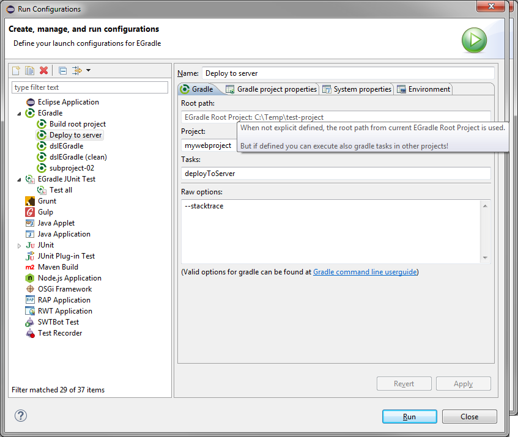

User guide
User guide

Launch existing configuration

When you have already a configuration created you can simple do a right click to the project and use "Run as ... EGradle" and the launch starts. If you have multiple launch configurations done for this project, a selection dialog will apear:

Configuration
- Project - if empty the tasks are executed in root project
- Tasks - a space separated list of gradle tasks to execute
- Raw options - here you can add Gradle command line options
Your are able to configure
- Gradle project properties
- System properties
- Environment
You could this do also with raw settings, but it's more comfortable and you are able to use eclipse variables: